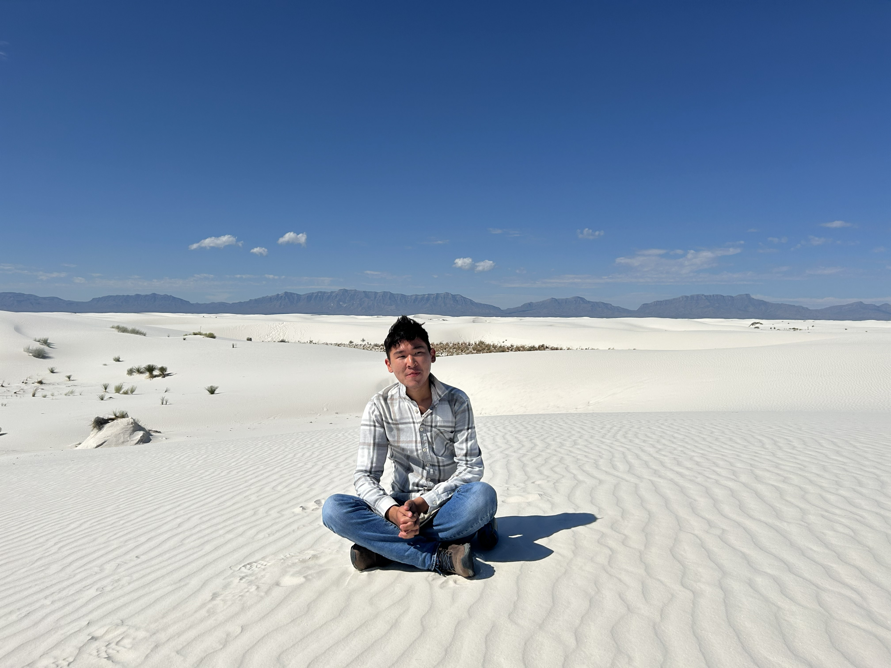
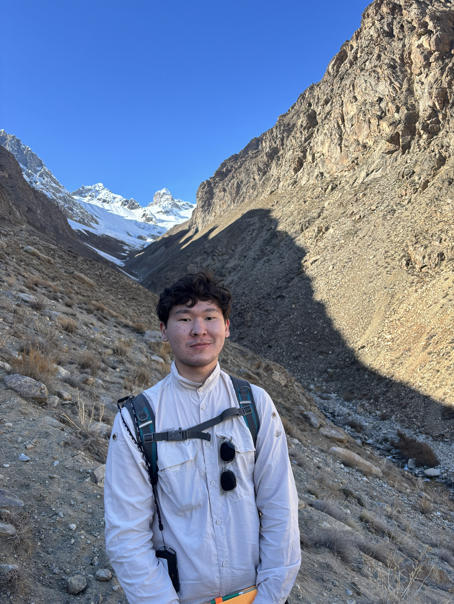
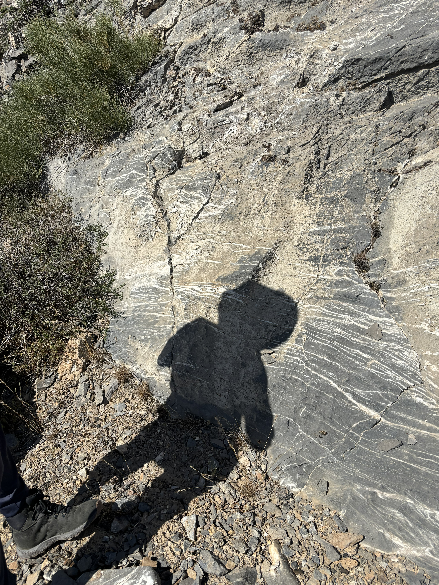
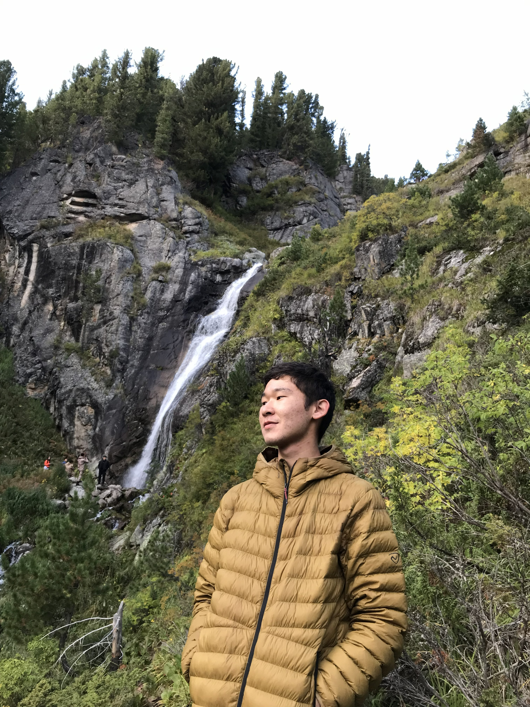

Field engineer today.
Geomechanics engineer next.
MSc in Geology, currently a Field Engineering Trainee at Baker Hughes, building toward a well-rounded career in geosciences.
About
I graduated a few months ago with an MSc in Geology, and I'm now working as a Field Service Engineering Intern in the LWD/DD product line at Baker Hughes. My focus going forward is geomechanics — understanding how rock behaves under stress, and applying that to real operational problems.
This site is where I'm collecting that work: projects, analysis, and the occasional field photo. Since a lot of geomechanics work leans on proprietary software, most of the technical projects here are built and shown in Jupyter notebooks instead — open, reproducible, and easy to follow.

In the field


